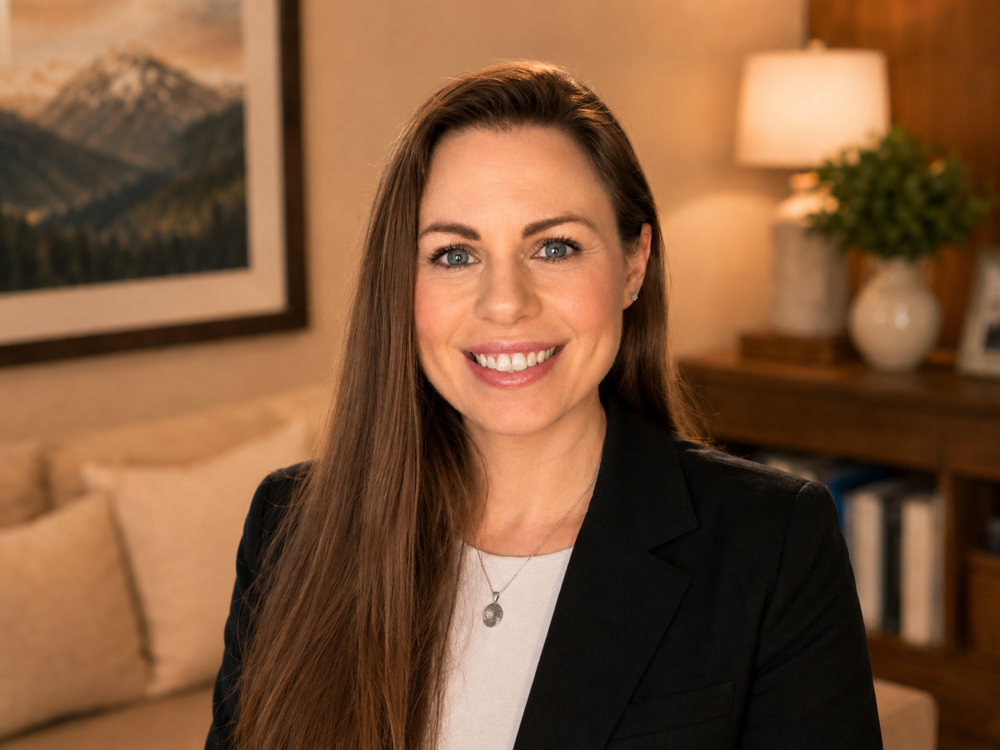

Calm, capable support for founders who need the details handled.
About Me
I'm Dana-Ann Brown, founder of Inbox to Ops Co. I help service-based business owners stay focused on their work while I help handle the details.
My background brings together executive support, business operations, project coordination, and creative digital support. That means I can help with the details that keep your business moving, from inboxes, calendars, and client communication to workflows, systems, content support, and the day-to-day pieces that make everything feel more organized and easier to manage.
I'm based in New York, and my experience blends corporate executive support, creative production, and practical day-to-day business help.

From executive support to creative operations
Before starting Inbox to Ops Co., I spent more than eight years at Capital One, where I supported senior executives and worked closely with C-suite teams on executive floors. I managed complex calendars, travel, expenses, high-level meetings, confidential workflows, budget tracking, vendor coordination, facilities projects, and executive-floor office moves.
After leaving corporate, I built an independent freelance business where creative work and client coordination went hand in hand. I managed intake, scheduling, contracts, invoices, timelines, revisions, digital files, and final delivery while creating social media content, branded videos, YouTube videos, graphics, and website updates.
I also spent years working in fast-moving production environments, including corporate videos, short films, music videos, commercials, and post-production workflows. In my on-set work as both a production assistant and Assistant Director, I helped keep people, schedules, locations, equipment, documentation, and timelines moving in the same direction.
All of that experience shaped the way I support clients now: calmly, clearly, and with an eye for what needs to happen next.
Why I started Inbox to Ops Co.
I know how quickly the small things become the heavy things.
The inbox that needs attention. The calendar that keeps shifting. The follow-up that still needs to happen. The client details that live in your head. The project that has no clear home. The workflow you keep meaning to organize.
Most business owners are not disorganized because they do not care. They are overwhelmed because they are carrying too many pieces at once.
I created Inbox to Ops Co. to give founders and small teams support they can actually feel in the day-to-day. Not just checking things off a list, but helping carry the details that keep the business running.
How I bring calm to the moving pieces
Calm and organization are not just work values for me. They are part of how I try to live.
I care about balance, self-improvement, and learning what supports a healthier, more sustainable way of working and living. That carries into how I work with clients. I believe the way your business runs should not constantly drain you. The systems, communication, and day-to-day flow should help create more clarity, not more noise.
I tend to be the person who brings order to the moving pieces. I like making sense of the mess, noticing what keeps falling through the cracks, and finding the little things that slow everything down.
When the back end of the business feels organized, it is easier to think clearly, make decisions, and move through the week with more ease.
Experience that brings structure and creativity together
Who I work best with
I work best with service-based founders, consultants, coaches, nonprofit leaders, small business owners, and growing teams that need steady support but are not ready for a full-time hire.
You may be a good fit if:
- You have steady clients or recurring work
- Your inbox, calendar, and follow-up need more structure
- You are tired of being the person who remembers everything
- You need help organizing workflows, systems, or client communication
- You want someone who can take ownership, not just wait for instructions
- You need practical support from someone who can think ahead
- You want your business to feel calmer, clearer, and easier to run